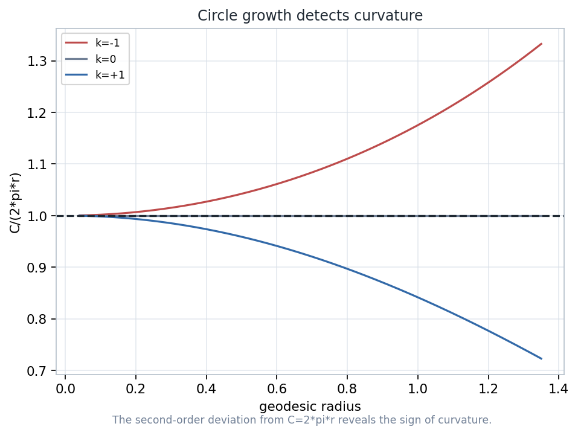
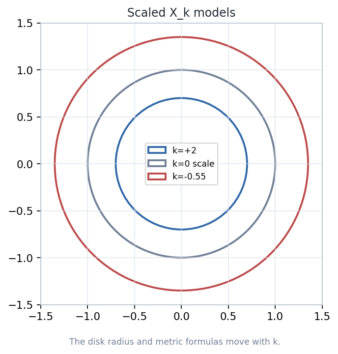
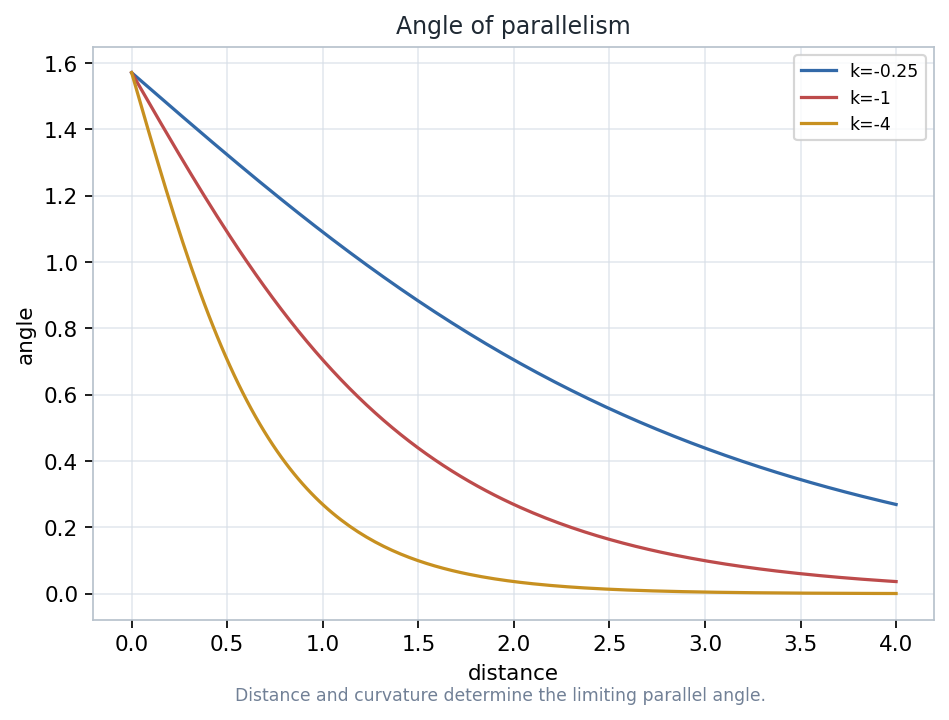
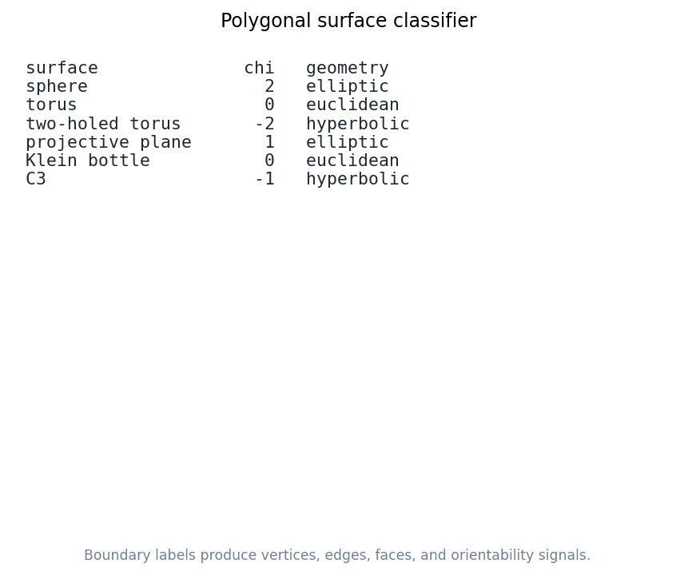
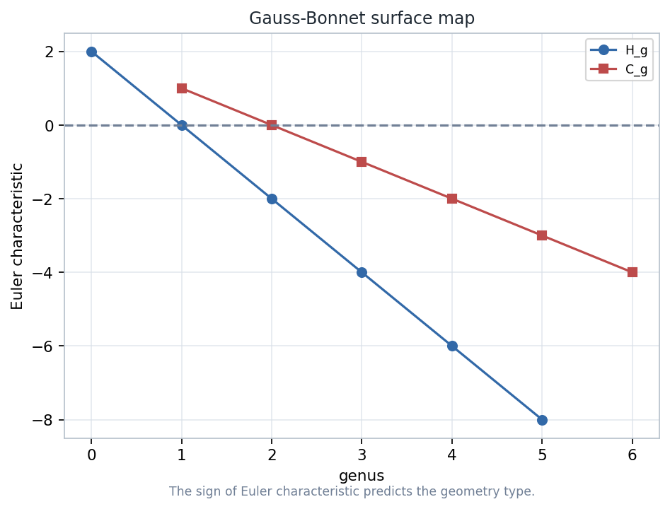
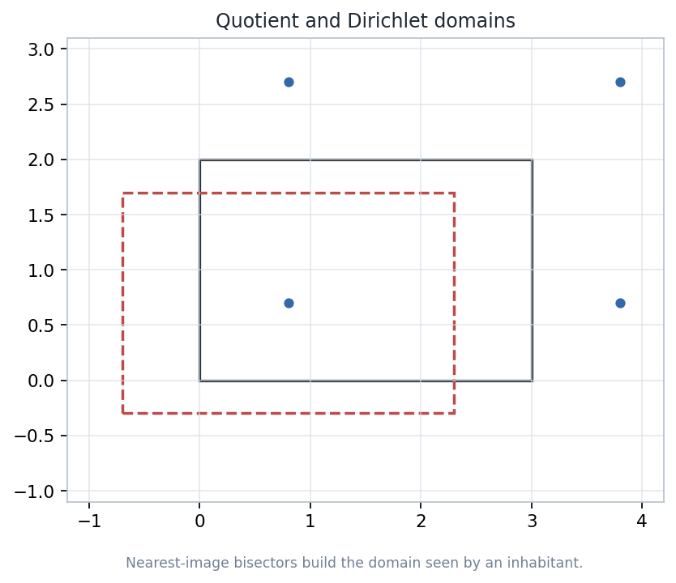

Curvature becomes measurable, topology becomes computable, and quotient constructions explain how local model spaces become inhabited worlds.
Circle growth and geodesic behavior estimate the curvature scale \(k\).
Boundary words and Euler characteristic classify compact surface types.
Group actions and Dirichlet domains turn model geometries into surfaces.
Source span: printed pages 145-194; PDF pages 155-204Notebook: 07-geometry-on-surfaces.ipynb
\(C_k(r)=2\pi r-\frac{\pi k}{3}r^3+O(r^5)\)
Small circles reveal curvature before a surface's global shape is visible.
\(\chi=V-E+F\)
Polygon gluings produce a finite combinatorial signature.
\(\int_S K\,dA=2\pi\chi(S)\)
Gauss-Bonnet translates total curvature into topology.
Instructor cue: each later slide asks whether the same surface is being read by measurement, by gluing data, or by a quotient of a model geometry.
For small radius \(r\), the sign of \(C_k(r)-2\pi r\) distinguishes positive, zero, and negative curvature.
Positive curvature crowds geodesics; negative curvature spreads them. The circumference error is a ruler-based observation.
Estimate \(k\) by plotting \(2\pi r-C(r)\) against \(r^3\).


Spherical or elliptic behavior; geodesics reconverge and triangle angle sums exceed \(\pi\).
Euclidean behavior; scale changes the ruler but not the flatness.
Hyperbolic behavior; geodesics diverge and area is tied to angle defect.
\(\Pi(d)=2\arctan(e^{-d/R})\)
The limiting parallel angle decreases with distance from the line.
In Euclidean geometry, parallelism ignores distance. In hyperbolic geometry, it records a metric scale.

A polygon plus a cyclic boundary word with paired labels and orientations.
Identify equivalent vertices, count edge pairs, and keep the polygon as one face.
\(\chi=V-E+F\)
A compact surface type becomes a computable invariant.
\(\chi=2-2g\)
Sphere, torus, double torus, and higher genus surfaces.
\(\chi=2-n\)
Projective plane sums and crosscap models.
The classifier is a bookkeeping lens, not a substitute for constructing the gluing.

\(\int_S K\,dA=2\pi\chi(S)\)
\(K\operatorname{Area}(S)=2\pi\chi(S)\)
The sign of \(K\) must agree with the sign of \(\chi\) when area is positive.
With boundary, add geodesic curvature and corner turning terms before comparing to \(2\pi\chi\).

Positive total curvature; the sphere is the model example.
Flat total curvature; the torus fits a Euclidean quotient.
Negative total curvature; higher genus surfaces fit hyperbolic uniformization.
A quotient identifies \(x\sim \gamma x\) for each group element \(\gamma\in\Gamma\).
The group should act by isometries, freely enough, and properly discontinuously enough to inherit a clean surface.
Fixed points produce singular behavior; not every quotient is a smooth surface.
\(D(p)=\{x:d(x,p)\le d(x,\gamma p)\ \forall\gamma\in\Gamma\}\)
Bisectors between \(p\) and translated images \(\gamma p\) become the walls of the observer's domain.
The domain is a navigational chart for the quotient, not a claim that the surface has a boundary.

Pick a boundary word, for example \(aba^{-1}b^{-1}\) or \(aa^{-1}bb^{-1}\).
Mark paired edges and trace vertex equivalence classes until every corner is assigned.
Compute \(\chi=V-E+F\), then compare with the orientable and nonorientable catalogs.
A flat polygon picture can encode a curved or multiply connected surface after identifications.
The group action must be geometrically well behaved before the quotient inherits a surface geometry.
Curvature is measured pointwise; Euler characteristic is global. Gauss-Bonnet integrates one into the other.
Teaching move: ask students which warning applies whenever they explain a picture, a gluing word, or a quotient domain.
Change \(k\) and observe how circle growth and model-space diagrams respond.
Enter a new polygon boundary word and inspect \(V\), \(E\), \(F\), orientability, and \(\chi\).
Rebuild the Dirichlet domain and compare its walls with the same quotient topology.
Circle growth detects the sign and scale of \(K\).
Boundary words encode surfaces through edge and vertex identifications.
Total curvature is constrained by \(2\pi\chi(S)\).
Dirichlet domains make model-space identifications visible.
measurement \(+\) gluing \(+\) group action \(\longrightarrow\) geometry of surfaces
Canonical deck for manifest index 441Design system: lecture-design-system-2026-05-23